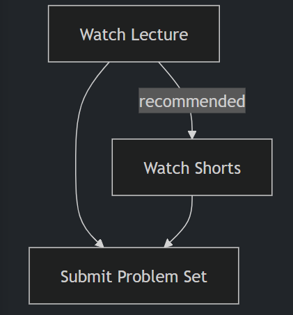

Welcome
An introduction to programming using a language called Python. Learn how to read and write code
as well
as how to test and “debug” it. Designed for students with or without prior programming
experience who’d
like to learn Python specifically. Learn about functions, arguments, and return values (oh my!);
variables and types; conditionals and Boolean expressions; and loops. Learn how to handle
exceptions,
find and fix bugs, and write unit tests; use third-party libraries; validate and extract data
with
regular expressions; model real-world entities with classes, objects, methods, and properties;
and read
and write files. Hands-on opportunities for lots of practice. Exercises inspired by real-world
programming problems. No software required except for a web browser, or you can write code on
your own
PC or Mac.
Whereas CS50x itself focuses on computer science more generally as well as programming with C,
Python,
SQL, and JavaScript, this course, aka CS50P, is entirely focused on programming with Python. You
can
take CS50P before CS50x, during CS50x, or after CS50x. But for an introduction to computer
science
itself, you should still take CS50x!
How to take this course
Even if you are not a student at Harvard, you are welcome to “take” this course for free via this OpenCourseWare by working your way through the course’s ten weeks of material. For each week, follow this workflow:

How to Teach this Course
If you are a teacher, you are welcome to adopt or adapt these materials for your own course, per the license. Additionally, we encourage teachers to participate in the CS50 Educator Workshop to learn more about CS50’s curriculum, technology, and pedagogy.